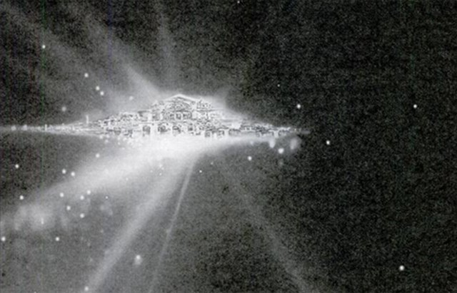

哈勃拍到的震惊世界的照片 
1993年12月26日，美国太空总署的哈勃太空望远镜拍摄到的"天国世界"
转载说明：自孩提起，天宇就一直喜欢仰望星空，听奶奶讲天上的故事。斗转星移，天宇于红尘中虽历经重重苦难，却至今犹童心未泯。俯视今日之地球美景一去不复返，生态环境恶劣惨不忍睹，众生灾祸不断，常令天宇心碎不已，唯有于万籁俱静之深夜，披衣伫立于小院，泪眼望天！幸得此博文，与诸位博友共享！如若苍宇大穹深处有神明之天国，愿一起虔心祈求圣王,启悟苍生敬畏天地，尊道贵德之慈悲本性，佑我中华大地风调雨顺，万民安康！
值此母亲节来临之际，恭祝忍辱负重，承载众生的地球母亲平安吉祥！ ——天宇于庚寅年三月廿五日
博文： "天国世界"或是"天堂"是否存在，对于有神论者和无神论者来说，永远是"信者恒信，不信者恒不信"的两极。对于眼见为实的人来说，看不见的东西在理智上难以相信；有时就算看见了，也会在情感上极力抵制。以下这个案例，可以再次考验一下大家的理智和情感。
哈勃太空望远镜意外"看见奇迹"
16年前，美国太空总署（NASA）的太空人在维修过哈勃太空望远镜之后，出现了不可思议的奇迹，当望远镜聚焦在遥远天际的一个星团，竟意外地拍摄到宇宙中璀璨的"天国世界"。
事情发生在1993年12月26日。这些照片清楚地显示出，在茫茫的夜空当中有一大片光耀灿烂的城市。这简直就是现实生活中的神话故事！
1994年2月8日，《世界新闻周刊》（Weekly World News）率先发表这张照片，并报导了女研究员梅森博士（Marcia Masson）的这项发现。
这是一个极为震撼人的消息！《世界新闻周刊》的网站上发表的只是一张图片，但实际上哈勃太空望远镜传回美国马里兰州格林贝尔特的戈达德太空飞行中心的图片有几百张。
梅森博士进一步说明了事件的来龙去脉："哈勃太空望远镜的目的，原本是为拍摄远在宇宙边缘的图像，但是镜头一度发生故障，直到有太空人奉令去将它修复。修复完成后，该望远镜传回的第一张图片是千变万化的色彩和亮光。当调整聚焦后，传回的图片出现了天国城市。"
美国太空总署分析家惊呆了，他们都不敢相信自己的眼睛。"经过检查和再检查，他们的结论是‘图像是真的'。他们还推论，那个城市不可能是由我们已知的生命在居住。"梅森博士引述美国太空总署内部专家的话："因为就我们所知，人体生命是不可能存在于一个冰冷的、没有空气的太空中。"梅森博士说："我们发现的是上帝居住的地方。"
"就是它，它就是我们一直在等待的证据！"相信有神存在的梅森博士兴奋地说。她相信那些千变万化的色彩和亮光来自于神的世界。
美国太空总署的专家证实，此图片引起美国前总统克林顿和副总统高尔的兴趣，他们要求太空总署提出简报。
发现改变全人类思维和信仰的东西
1993年，美国太空总署还曾接受教皇约翰．保罗二世（2005年去世）的要求，将照片传给他。由于美国太空总署拒绝对《世界新闻周刊》的照片报导作出评论，所以梵蒂冈方面低调处理保持沉默。但太空总署专家们承认，美国太空总署"已发现到一些有可能改变未来全人类思维和信仰的东西了"。
获得太空总署那一张照片副本的梅森博士认为，拍摄到神的世界绝不是偶然的，她说："歪打正着，超级好运之下，美国太空总署哈勃望远镜瞄准了特定的地点，在特定的时间里拍摄到了这些照片。宇宙那么广阔，所有地方都是美国太空总署可以拍摄探索的对象，为何会偏偏选中那里呢？我没有特定的宗教信仰，但是我并不怀疑是一种神秘的力量，让哈勃望远镜对准了某一个特定的太空位置。"
美国太空总署一直没有把所发现、所拍摄的宇宙真实情况告诉大众，哈勃太空望远镜拍摄的天国世界终于被梅森博士透露出来。
究竟科学和神学是否是抵触的？这个例子值得深思。当然，有些网上的讨论认为梅森博士一个人的话不足采信。那么，或许世人公认的顶级科学家──牛顿和爱因斯坦的看法值得参考一下。
牛顿和爱因斯坦的见解
牛顿是一位公认的天才科学家，他在天文、地理、数学、神学等方面都有辉煌的成就，他最有名的著作《自然科学的数学原理》是近代科学的基石。
哈雷是牛顿的好友，英国著名天文学家，哈雷彗星的轨道就是他所推算的，他不相信宇宙中一切的天体是神创造的。有一次，牛顿造了一个太阳系模型，中央是一个镀金的太阳，四周各大行星各照各的位置排列整齐，一拉曲柄，各星球立即按照自己的轨道和谐地转动，形象非常美妙。
有一天，哈雷来访，看到这个模型，玩弄了好久，惊叹不已，追问这是谁造的。牛顿回答说，这个模型没有人设计和制造，只不过是偶然间各种材料凑巧碰在一起而形成的。哈雷说，无论如何必定有人造它，并且是位天才。
这时牛顿拍着哈雷肩膀说："这个模型虽然精巧，但比起真正太阳系，实在算不上什么，你尚且相信一定有人制造它；而比这个模型精巧亿万倍的太阳系，岂不是应该有全能的神，用高度智慧创造出来的？"哈雷恍然大悟，终于相信神的存在。
事实上，牛顿也是位神学家，毕生致力于神学的研究。他谈到自己的科学成就时说，他只不过是在"追随神的思想"，"照神的思想去思想而已"。他总结对宇宙万物的看法说："宇宙万物，必定有一位全能的神在掌管、统治。在望远镜的末端，我看到了神的踪迹。"
被许多人尊为最伟大的科学家爱因斯坦又是如何看待神学的？在一次访谈中，爱因斯坦说："有些人认为宗教不合乎科学道理。我是一位研究科学的人，我深切知道，今天的科学只能证明某种物体的存在，而不能证明某种物体不存在。因此如果我们现在还不能证明某种物体的存在，并不能断定它就是不存在。"
爱因斯坦进一步举出发现"原子核"的例子说："譬如若干年前，我们未能证明原子核的存在，假如当时我们贸然断定原子核不存在，则在今天看来，不就犯了天大的错误吗？"
访谈最后，爱因斯坦说到他相信"神"的存在：今天科学没有把神的存在证明出来，是由于科学还没有发展到那种程度，而不是神不存在。人的眼、耳、鼻、舌、身五种感觉是有限制的，对很多事物无法感觉到，科学也无法否认神的存在。因此，我们不该武断的否定神的存在。